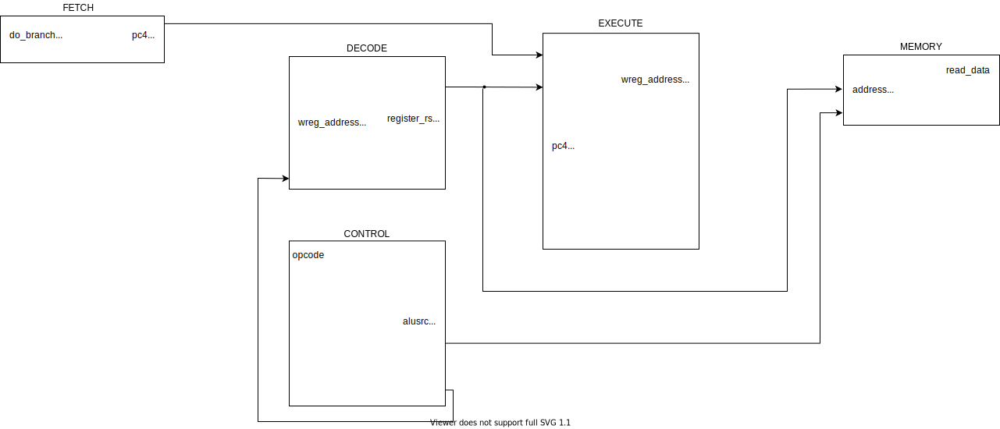

Single Cycle MIPS Processor
Author: Authors - Yehowshua Immanuel, Saloni Oswal, Tushar Krishna
PDF VersionGo ahead and download the assignment.
Required Tools for this lab¶
Lab Assignment 1¶
30 points + 20 points extra-credit
-
Simulate the verilog MIPS processor by running
makein the RTL directory.Take a screenshot of the resulting waveform
-
Browse through the codebase and connect the different modules in the diagram below. A few lines have already been filled in for you.
It might help to start by browsing
mips.v.
-
Go ahead and modify the codebase to support the MIPS slt instruction. Hint: you'll need to modify
execute.vYou can also refer to the truth table below.
-
How can you verify the
sltinstruction is now working? What might you have to change infetch.v?Go ahead and implement those changes.
Insert a screen capture of the waveform that shows that slt now works.
-
Extra Credit: modify the codebase to support the MIPS
j,jal,luiandoriinstructions. (5 points for each working instruction. You can implement any one, few or all of these).
What to Submit¶
You need to submit a zip folder of your updated ``rtl" folder.
Some Notes¶
Here are some things to keep in mind as you do the assignment.
- The verilog codebase itself isn't very representative of well designed RTL. The codebase itself reflects the architecture presented in the slides, which was unfortunately designed from a circuit level.
- Technically - in a real processor, you should be setting the value of a register before you use it if you haven't done so since the processor restarted. In the codebase, for simplicity from the student's perspective, each register is initialized to the value of its number index.
- A process block such as
alwaysexecutes anytime any of its arguments change state. If you havealways(*), the process block executes anytime any inputs in the module change state which effectively implements combinational logic. - You should become familiar with the concatenation and replication operators here
control.vcould technically be a part ofdecode.v
Truth Table¶
| Opcode | ALUOp | Operation | Function | ALU function | ALU control | |
|---|---|---|---|---|---|---|
| 0 | lw | 00 | load word | XXXXXX | add | 010 |
| 1 | sw | 00 | store word | XXXXXX | add | 010 |
| 2 | beq | 01 | branch equal | XXXXXX | subtract | 110 |
| 3 | R-type | 10 | add | 100000 | add | 010 |
| 4 | R-type | 10 | subtract | 100010 | subtract | 110 |
| 5 | R-type | 10 | AND | 100100 | AND | 000 |
| 6 | R-type | 10 | OR | 100101 | OR | 001 |
| 7 | R-type | 10 | set-on-less-than | 101010 | set-on-less-than | 111 |